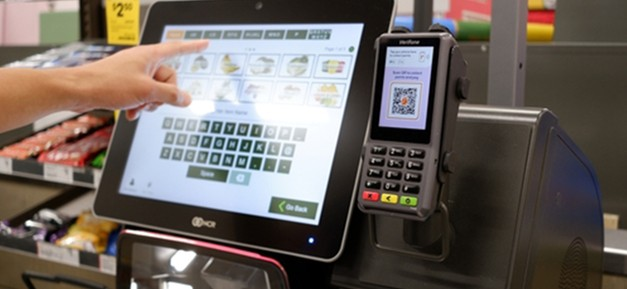

Cara POS Membantu Mencegah Kecurangan Karyawan

Mengelola bisnis restoran atau retail tidak hanya soal penjualan, tetapi juga menjaga kepercayaan dalam tim. Salah satu tantangan yang sering terjadi adalah kecurangan karyawan, baik dalam bentuk manipulasi transaksi, pencurian uang, maupun penyalahgunaan stok. Jika tidak dikontrol dengan baik, hal ini dapat menyebabkan kerugian yang cukup besar bagi bisnis.
Kecurangan yang umum terjadi antara lain memasukkan transaksi dengan nominal lebih kecil (short ringing), tidak mencatat transaksi lalu menyimpan uang secara pribadi, hingga memberikan produk gratis tanpa kontrol. Selain itu, ada juga praktik membatalkan transaksi setelah jam operasional untuk mengambil selisih uang. Masalah ini sering sulit terdeteksi jika sistem yang digunakan masih manual.

Untuk mengatasi hal tersebut, bisnis perlu menerapkan sistem yang mampu mengontrol aktivitas operasional secara transparan. Di sinilah peran sistem POS seperti BantuKasir POS menjadi sangat penting.
BantuKasir POS membantu mencegah kecurangan melalui berbagai fitur, seperti pencatatan transaksi otomatis, pembatasan akses berdasarkan role karyawan, serta pencatatan aktivitas (log) yang dapat ditelusuri. Dengan sistem ini, hanya pihak tertentu yang dapat melakukan tindakan sensitif seperti pembatalan transaksi atau perubahan data.
Selain itu, laporan penjualan dan aktivitas dapat dipantau secara berkala untuk mendeteksi pola yang mencurigakan. Integrasi dengan sistem stok juga memungkinkan pemilik usaha membandingkan data penjualan dengan kondisi barang secara langsung, sehingga potensi penyimpangan dapat segera diketahui.
Dengan menerapkan sistem yang terkontrol dan transparan seperti BantuKasir POS, bisnis dapat meminimalkan risiko kecurangan, meningkatkan akuntabilitas karyawan, serta menjaga stabilitas operasional. Sistem yang tepat bukan hanya membantu penjualan, tetapi juga melindungi bisnis dari kerugian yang tidak terlihat.